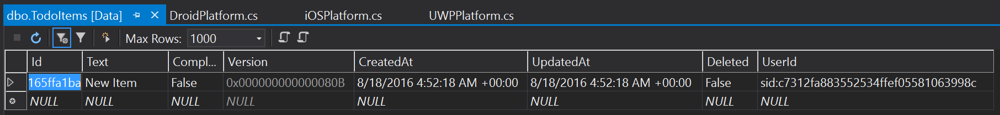
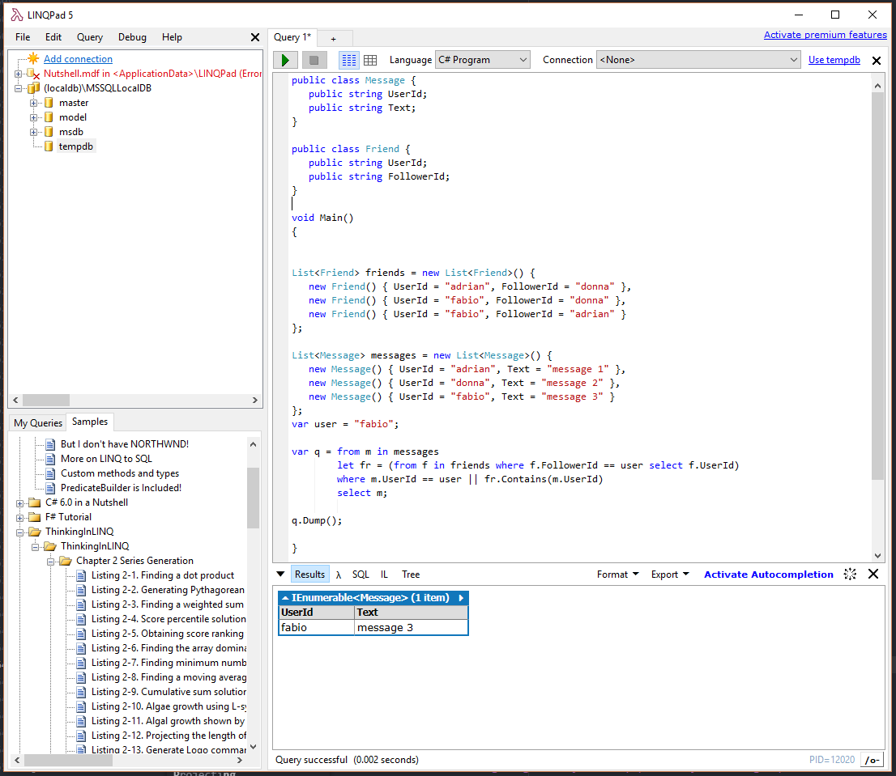

Projecting a Data Set¶
We have thus far looked at what it takes to project a whole SQL database table into the mobile world. We can easily do both pre-existing and greenfield databases with code-first and database-first methodologies. The next logical thing is to see what we can do to adjust the transfer of data. How do we filter and transform the data as requests are sent to the server.
There are two places where adjustment of the transfer is accomplished. I recommend spending time on the server adjusting the table controller so that security policies are assured. The set of data that a mobile client can see should be the complete set of data that the user of that mobile device is allowed to see. We can then adjust the view of that data at the client.
For example, let's say that the user is a sales person. They are allowed to see the information for their accounts, but only wants to see the records for the accounts that have planned to visit within the next week. We would place the limitation on what records they can see on the server, but place the date range manipulation on the client.
In this section, we will look at all the things one can do on in the table controller on the server.
Basics of Projection¶
There are four basic things we will want to do with table controllers:
Filters adjust the data that the requesting user can see. We would normally apply a filter to all
methods EXCEPT the Create or Insert method. This is the most common adjustment that is coded in
the table controller as filtering is the key to enforcing security policy.
Transforms adjust the data that is being sent to the table controller before it is stored. It is used in two areas. First, it is used to automatically inject necessary fields for ensuring the security filters can be applied. For instance, if we wish to have a per-user data store (where a user can only see their own records), then we will need to store the user ID of the requesting user. Secondly, it is used to insert point-in-time lookups into a record. For instance, if we wish to record the current price of an item at the time the record was inserted into the table, we would do this with a transform.
Validations do not adjust the data. Validations ensure that the data is correct according to the server model. Your data may, for example, store an age indirectly by storing the year of birth. It's highly unlikely that you will want to support the entire range of possible years. You definitely don't want to support years in the future.
Finally, Hooks allow another piece of code to be triggered either before or after the request has been processed. For example, we may wish to send a push notification on a valid insert, or kick off an order processing work flow when a record is updated with an approval to ship. We won't be covering hooks in this chapter as we have a whole chapter on customized requests later on.
Projection Recipes¶
There are a few "standard" projects we see all the time and these are great ways to learn how to do projections.
Per-User Data¶
The first projection that pretty much everyone implements is the Per-User Data projection. In this recipe, we want the user to only see records that they have inserted. For example, let's update our TodoItem table to support per-user data. This involves three parts:
- A Filter that limits data to only the logged in user.
- A Transform that updates an inserted record with the logged in user.
- A Validation that ensures an updated or deleted record is owned by the user.
The logged in user is available as the User object, but you have to cast it to a ClaimsPrinicipal to access the claims that are sent inside the identity token. I tend to use a public property as an implementation:
public string UserId
{
get
{
var principal = this.User as ClaimsPrincipal;
return principal.FindFirst(ClaimTypes.NameIdentifier).Value;
}
}
It's generally a good idea to use the SID as the user ID for the authenticated user in security applications. The user can change the email address or username associated with the account, but the SID never changes.
We need an extra property in the DataObjects\TodoItem.cs class (in the Backend project) to hold
the extra security claim that we will be adding later:
using Microsoft.Azure.Mobile.Server;
namespace Chapter3.DataObjects
{
public class TodoItem : EntityData
{
public string UserId { get; set; }
public string Text { get; set; }
public bool Complete { get; set; }
}
}
Remember to do a code-first migration if you are doing this on an existing service. Let's take a look
at the PostTodoItem() first. This requires the Transform to ensure the UserId field is filled
in. We've already defined the UserId field, so we can inject that in the inbound object:
// POST tables/TodoItem
public async Task<IHttpActionResult> PostTodoItem(TodoItem item)
{
item.UserId = UserId;
TodoItem current = await InsertAsync(item);
return CreatedAtRoute("Tables", new { id = current.Id }, current);
}
Transforms tend to be short. This is deliberate. We don't want any of our code in a table controller to do too much work. The heavy lifting is done by the database, with the ASP.NET table controller being a conduit for translating requests into responses. This allows us to support more users on less virtual hardware.
The Filter is a relatively simple affair in this case. We ensure that the only records returned
are those that belong to the user. For example, here is a simplistic filter applied to the GetAll
method:
// GET tables/TodoItem
public IQueryable<TodoItem> GetAllTodoItems()
{
return Query().Where(item => item.UserId.Equals(UserId));
}
The Query() and Lookup(id).Queryable methods return IQueryable objects. The IQueryable is used
to represent a query, so we can alter it with LINQ. A filter is merely a LINQ expression to limit the
records being returned. There might be another filter sent by the client, in which case this filter will
be tacked on the end of the request. For instance, let's say that the client requests only records where
Complete == False. When this comes through the GetAllTodoItems() method, the resulting SQL code will
look something like this:
SELECT * FROM [dbo].[TodoItems]
WHERE (Complete = false) AND (UserId = @0);
The @0 parameter will be replaced by the users SID.
If a user is not logged in (i.e. you forgot to add the
[Authorize]attribute), the User object will be null and the server will produce a 500 Internal Server Error back to the client.
This can get a little unwieldy for complex filters, however. Since the filters are applied in two
different places (and are generally used for validation as well), I like to abstract them into a
LINQ extension method. Create a class in Extensions\TodoItemExtensions.cs (you will have to create
the Extensions directory) with the following contents:
using System.Linq;
using Chapter3.DataObjects;
namespace Chapter3.Extensions
{
public static class TodoItemExtensions
{
public static IQueryable<TodoItem> PerUserFilter(this IQueryable<TodoItem> query, string userid)
{
return query.Where(item => item.UserId.Equals(userid));
}
}
}
We can use this to simplify our filters and make them more readable:
// GET tables/TodoItem
public IQueryable<TodoItem> GetAllTodoItems()
{
return Query().PerUserFilter(UserId);
}
// GET tables/TodoItem/48D68C86-6EA6-4C25-AA33-223FC9A27959
public SingleResult<TodoItem> GetTodoItem(string id)
{
return new SingleResult<TodoItem>(Lookup(id).Queryable.PerUserFilter(UserId));
}
Note that we need to apply the filter we have written to both the Get methods.
When we look at the Delete and Patch methods, we only have to validate that the UserId owns the
id we are updating. For that, I write a custom validation method. This method is in the table controller:
public void ValidateOwner(string id)
{
var result = Lookup(id).Queryable.PerUserFilter(UserId).FirstOrDefault<TodoItem>();
if (result == null)
{
throw new HttpResponseException(HttpStatusCode.NotFound);
}
}
The validation method must throw an appropriate HttpResponseException if the validation fails. It's common
to return a 404 Not Found error rather than a 403 Forbidden error for security reasons. Returning a
403 Forbidden error confirms that the Id exists, which is a data leakage. Returning a 404 Not Found
error means that a rogue client cannot tell the difference between "I can't access the record" and
"the record doesn't exist". We can use this validation method in each method that requires it:
// PATCH tables/TodoItem/48D68C86-6EA6-4C25-AA33-223FC9A27959
public Task<TodoItem> PatchTodoItem(string id, Delta<TodoItem> patch)
{
ValidateOwner(id);
return UpdateAsync(id, patch);
}
// DELETE tables/TodoItem/48D68C86-6EA6-4C25-AA33-223FC9A27959
public Task DeleteTodoItem(string id)
{
ValidateOwner(id);
return DeleteAsync(id);
}
Although this is a very basic example of a filtered table, we can see three different techniques:
- A Filter implemented as a LINQ query in an
IQueryableextension method, applied to bothGetmethods. - A Transform implemented inside the
Postmethod. - A Validation implemented using the filter as a method in the table controller, applied to
PatchandDeletemethods.
I set up a copy of the TaskList from Chapter 2 with Azure Active Directory Client Flow for authentication. We can look at the SQL table contents after we log in with this client and add a new task:

Note that the UserId is the security ID of the authenticated user. The security ID is a stable ID for the user. The security ID does not change if the user changes their username or email address.
Per-Group Data¶
Let's say we have a mobile client that a sales person uses to enter data about sales. He might be able to pick from a list of industries that the account is in. The enterprise may further organize those industries as groups, with several people within the organization able to view the accounts associated with a specific industry.
In this case:
- We want to limit the mobile client to only view accounts for groups to which he belongs.
- We want to allow the mobile client to submit new accounts for any group to which he belongs.
- Updates and Deletes should not adjust the group field.
The limit will be implemented as a filter. The update and insert methods will require a validation method (comparing the submitted group with the list of groups to which the user belongs).
We have another table in DataObjects\Example.cs. Let's extend it to support a GroupId:
using System;
using Microsoft.Azure.Mobile.Server;
namespace Chapter3.DataObjects
{
public class Example : EntityData
{
public string GroupId { get; set; }
public string StringField { get; set; }
public int IntField { get; set; }
public double DoubleField { get; set; }
public DateTimeOffset DateTimeField { get; set; }
}
}
We'll store the group ID in the additional field. Don't forget to use a code-first migration to update the database. Each of the validations and filters requires a list of the groups the user belongs to. This can be achieved using a claim lookup:
/// <summary>
/// Get the list of groups from the claims
/// </summary>
/// <returns>The list of groups</returns>
public async Task<List<string>> GetGroups()
{
var creds = await User.GetAppServiceIdentityAsync<AzureActiveDirectoryCredentials>(Request);
return creds.UserClaims
.Where(claim => claim.Type.Equals("groups"))
.Select(claim => claim.Value)
.ToList();
}
If you are using claims as part of your security model, you should add the claims that you are using to the identity token that is used for authentication. You can do this with custom authentication by calling LoginAsync() twice - once for the standard login method and the second time to adjust the token through the custom auth.
Our filter is defined as a LINQ extension (just like in the per-user filter) in Extensions\ExampleExtensions.cs:
using System.Collections.Generic;
using System.Linq;
using Chapter3.DataObjects;
namespace Chapter3.Extensions
{
public static class ExampleExtensions
{
public static IQueryable<Example> PerGroupFilter(this IQueryable<Example> query, List<string> groups)
{
return query.Where(item => groups.Contains(item.GroupId));
}
}
}
We can use this LINQ extension on the retrieval methods:
// GET tables/Example
public async Task<IQueryable<Example>> GetAllExample()
{
var groups = await GetGroups();
return Query().PerGroupFilter(groups);
}
// GET tables/Example/48D68C86-6EA6-4C25-AA33-223FC9A27959
public async Task<SingleResult<Example>> GetExample(string id)
{
var groups = await GetGroups();
return new SingleResult<Example>(Lookup(id).Queryable.PerGroupFilter(groups));
}
We have to convert each of the methods to a async method so that we can check the groups. Retrieving the group list for a user is an async method and this trickles down to the method being called.
The validation method is also an async method (for the same reason). The Post and Patch methods look like this:
/// <summary>
/// Validator to determine if the provided group is in the list of groups
/// </summary>
/// <param name="group">The group name</param>
public async Task ValidateGroup(string group)
{
var groups = await GetGroups();
if (!groups.Contains(group))
{
throw new HttpResponseException(HttpStatusCode.BadRequest);
}
}
// PATCH tables/Example/48D68C86-6EA6-4C25-AA33-223FC9A27959
public async Task<Example> PatchExample(string id, Delta<Example> patch)
{
await ValidateGroup(patch.GetEntity().GroupId);
return await UpdateAsync(id, patch);
}
// POST tables/Example
public async Task<IHttpActionResult> PostExample(Example item)
{
await ValidateGroup(item.GroupId);
Example current = await InsertAsync(item);
return CreatedAtRoute("Tables", new { id = current.Id }, current);
}
It's appropriate to throw a 400 Bad Request for a validation error in this case as the user is authenticated at this point. The user is not being exposed by the response.
There is no transform in this recipe as the group ID is being sent on each update request.
Friends Data¶
One of the common social patterns is a "friends feed". We can post to our feed and we can see
both our messages and our friends messages. In this recipe, we will have three tables. The
first is the Users table with the following model:
using Microsoft.Azure.Mobile.Server;
namespace Chapter3.DataObjects
{
public class User : EntityData
{
public string EmailAddress { get; set; }
public string Name { get; set; }
}
}
Don't forget to add a
DbSet<>for each table to theMobileServiceContextto add the table.
In our application, we will update the Users table via a custom authentication controller.
After we have logged in via Azure Active Directory, we call the InvokeApiAsync() method
to call the custom authentication controller and get a new token with some extra information
in it. We'll cover custom authentication controllers in a later chapter.
using System;
using System.Data.Entity.Migrations;
using System.IdentityModel.Tokens;
using System.Linq;
using System.Security.Claims;
using System.Security.Principal;
using System.Threading.Tasks;
using System.Web.Http;
using Chapter3.DataObjects;
using Chapter3.Models;
using Microsoft.Azure.Mobile.Server.Authentication;
using Microsoft.Azure.Mobile.Server.Login;
using Newtonsoft.Json;
namespace Chapter3.Controllers
{
[Authorize]
[Route("auth/login/custom")]
public class CustomAuthController : ApiController
{
MobileServiceContext dbContext;
public CustomAuthController()
{
dbContext = new MobileServiceContext();
string website = Environment.GetEnvironmentVariable("WEBSITE_HOSTNAME");
Audience = $"https://{website}/";
Issuer = $"https://{website}/";
SigningKey = Environment.GetEnvironmentVariable("WEBSITE_AUTH_SIGNING_KEY");
}
public string Audience { get; set; }
public string Issuer { get; set; }
public string SigningKey { get; set; }
[HttpPost]
public async Task<IHttpActionResult> Post()
{
var creds = await User.GetAppServiceIdentityAsync<AzureActiveDirectoryCredentials>(Request);
var sid = ((ClaimsPrincipal)User).FindFirst(ClaimTypes.NameIdentifier).Value;
var email = creds.UserClaims
.FirstOrDefault(claim => claim.Type.EndsWith("emailaddress"))
.Value;
var name = creds.UserClaims
.FirstOrDefault(claim => claim.Type.EndsWith("name"))
.Value;
// Insert the record information into the database
User user = new User()
{
Id = sid,
Name = name,
EmailAddress = email
};
dbContext.Users.AddOrUpdate(user);
dbContext.SaveChanges();
// Mind a new token based on the old one plus the new information
var newClaims = new Claim[]
{
new Claim(JwtRegisteredClaimNames.Sub, sid),
new Claim(JwtRegisteredClaimNames.Email, email),
new Claim("name", name)
};
JwtSecurityToken token = AppServiceLoginHandler.CreateToken(
newClaims, SigningKey, Audience, Issuer, TimeSpan.FromDays(30));
// Return the token and user ID to the client
return Ok(new LoginResult()
{
AuthenticationToken = token.RawData,
UserId = sid
});
}
}
public class LoginResult
{
[JsonProperty(PropertyName = "authenticationToken")]
public string AuthenticationToken { get; set; }
[JsonProperty(PropertyName = "user_id")]
public string UserId { get; set; }
}
}
The actual database update is done by Entity Framework. The ASP.NET service is just a regular ASP.NET service using Entity Framework, so all the same facilities are available as that configuration. In this case, we take the provided token (which is the same token that Azure Active Directory client-flow returns) and return a modified token that includes a couple of extra fields. During this process, we update the database by adding or inserting (also known as upserting) a record with the Id field set to the security ID and the additional fields we need.
I need a table to implement the "friends" relationship. My friends are not stored in Azure Active Directory. If I were using a social provider, I could use the friends feed from that social provider by doing a Graph API lookup. In this case, I'm going to use the following model:
namespace Chapter3.DataObjects
{
public class Friend
{
public string UserId { get; set; }
public string FriendId { get; set; }
}
}
This is not based on EntityData because I am not going to expose this table to the
mobile client. It's purely for determining what records I am going to show to the
mobile client. In this example, I will maintain the data in this table manually.
A "real" application would have some sort of custom workflow to add friends and get
the friends to approve the connection.
To get the list of "friends I can see", I will request a list of the FriendId field
where the UserId is my UserId.
The final table in the trio is the Messages table. This will be downloaded to the
mobile client so it has to be based on the EntityData base class. In addition, the
inserts for this table are going to look a lot like a per-user table. I need the
UserId field to properly maintain the security model.
using Microsoft.Azure.Mobile.Server;
namespace Chapter3.DataObjects
{
public class Message : EntityData
{
public string UserId { get; set; }
public string Text { get; set; }
}
}
Let's think about the security model we want to implement in the Messages table controller:
- A filter will allow the viewing of the users own data or any data that has an association in the Friends table.
- A transform will set the owner of the record to my UserId
- We will remove the ability to update or delete records since this is a write-once read-many table.
Let's look at the PostMessage() method for the MessageController first. This is
practically identical to the PostTodoItem() method in the per-user recipe:
public string UserId => ((ClaimsPrincipal)User).FindFirst(ClaimTypes.NameIdentifier).Value;
// POST tables/Message
public async Task<IHttpActionResult> PostMessage(Message item)
{
item.UserId = UserId;
Message current = await InsertAsync(item);
return CreatedAtRoute("Tables", new { id = current.Id }, current);
}
The filter is a little harder. We are going to use the Fluent Syntax for LINQ to provide the right logic. The Fluent Syntax is also known as "Query Syntax" or the "declarative syntax", depending on the author. The extension method looks like this:
using Chapter3.DataObjects;
using System.Data.Entity;
using System.Linq;
namespace Chapter3.Extensions
{
public static class MessageExtensions
{
public static IQueryable<Message> OwnedByFriends(this IQueryable<Message> query, DbSet<Friend> friends, string userId)
{
var myPosts = from m in query
let fr = (from f in friends where f.FriendId == userId select f.UserId)
where m.UserId == userId || fr.Contains(m.UserId)
select m;
return myPosts;
}
}
}
The LINQ query selects the messages from the Messages table where the author is either the mobile client user or the mobile client
user is listed as a friend of the author. My query methods in the table controller now look similar to the per-user data:
public string UserId => ((ClaimsPrincipal)User).FindFirst(ClaimTypes.NameIdentifier).Value;
// GET tables/Message
public IQueryable<Message> GetAllMessage()
{
return Query().OwnedByFriends(context.Friends, UserId);
}
// GET tables/Message/48D68C86-6EA6-4C25-AA33-223FC9A27959
public SingleResult<Message> GetMessage(string id)
{
return new SingleResult<Message>(Lookup(id).Queryable.OwnedByFriends(context.Friends, UserId));
}
Using LINQPad to test LINQ Queries¶
I tend to struggle with LINQ queries. Fortunately, there are a plethora of blogs, tutorials and tools out there to assist. One of my favorite tools is LINQPad. LINQPad gives you an interactive playground for testing your LINQ queries. In this case, I created a new query with the following contents:
public class Message {
public string UserId;
public string Text;
}
public class Friend {
public string UserId;
public string FollowerId;
}
void Main()
{
List<Friend> friends = new List<Friend>() {
new Friend() { UserId = "adrian", FollowerId = "donna" },
new Friend() { UserId = "fabio", FollowerId = "donna" },
new Friend() { UserId = "fabio", FollowerId = "adrian" }
};
List<Message> messages = new List<Message>() {
new Message() { UserId = "adrian", Text = "message 1" },
new Message() { UserId = "donna", Text = "message 2" },
new Message() { UserId = "fabio", Text = "message 3" }
};
var user = "fabio";
var q = from m in messages
let fr = (from f in friends where f.FollowerId == user select f.UserId)
where m.UserId == user || fr.Contains(m.UserId)
select m;
q.Dump();
}
I have a friends table and a messages table. User "donna" should be able to see three messages, user "adrian"
should be able to see two messages and user "fabio" should be able to see just one message. By changing the
value of the user variable, I can test the query I am writing. I don't need to set up a database (although
LINQPad supports that as well).

Best Practices¶
There are a number of best practices that I think are important in developing table controllers:
- Optimize Operations:
You should always optimize the CRUD operations that are implemented in a table controller. This means limiting the code so that only filters, transforms and validators are used. You can use hooks as an asynchronous way to handle custom code if something else needs to happen when a mobile client inserts, updates or deletes a record. (We will be delving into hooks during the custom code chapter later on).
You should NOT insert custom code into a table controller that runs synchronously.
- Implement Security Policy with Filters:
The mobile backend should be concerned with security. What can the connecting user see? Use filters to ensure that the connecting user can only see the data that they are allowed to see. There are several examples of bad filters. For example, if a user normally wants to see the last 7 days worth of messages, but is allowed to see all messages. I would implement this particular case as a client-side filter as it has nothing to do with security.
- Use LINQ Extension Methods:
LINQ extension methods can be used to great effect to make your CRUD methods more readable. I love readable code. For example, consider the following two code snippets from the last recipe:
public IQueryable<Message> GetAllMessage()
{
// Recipe #1
return Query().OwnedByFriends(context.Friends, UserId);
// Recipe #2
return from m in Query()
let fr = (from f in context.Friends where f.FriendId == UserId select f.UserId)
where m.UserId == UserId || fr.Contains(m.UserId)
select m;
}
The first recipe makes the intent of the filter very clear. I have to work at understanding the specific implementation of the second method.